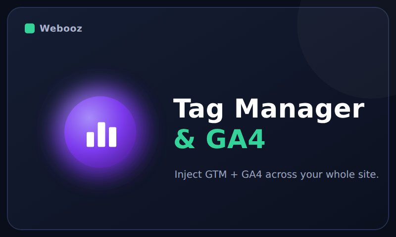
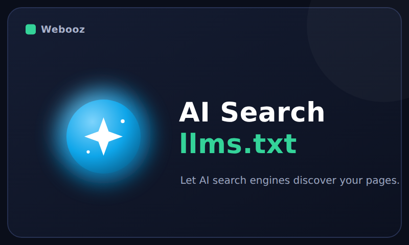
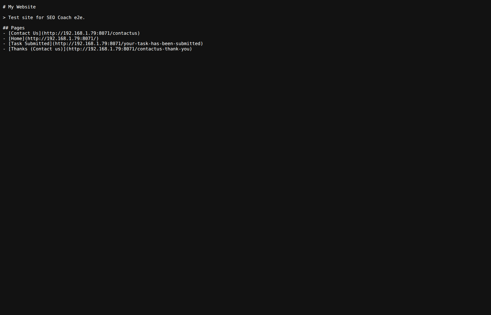
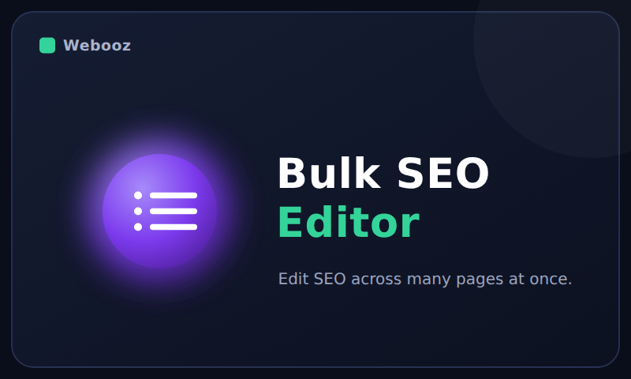
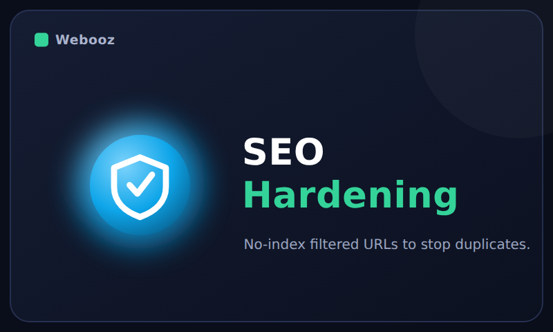
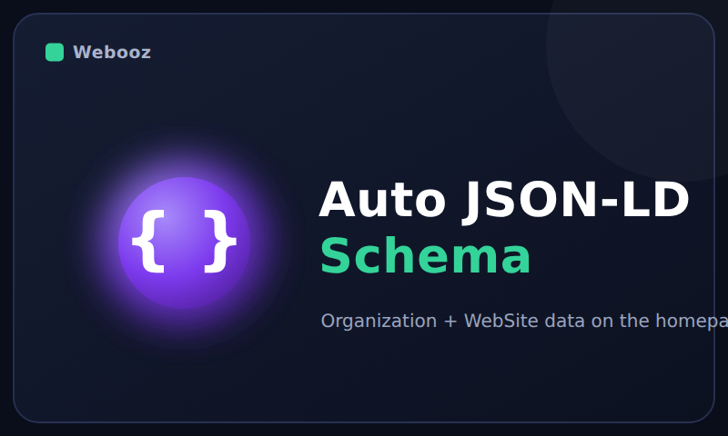

SEO Coach adds a live SEO & readability coach to Odoo's own Optimize SEO window — plus Google Tag Manager & GA4, an /llms.txt file for AI search, a bulk SEO editor, SEO hardening and auto JSON-LD schema. Built natively in OWL, no external libraries, depending only on Website.
✔ Tested end-to-end on Odoo 19 Enterprise — no conflicts with POS or Inventory.

The live SEO Coach inside the standard Optimize SEO window.

Google Tag Manager & GA4. Paste your GTM and GA4 ids in Website settings; the scripts are injected site-wide automatically.

llms.txt for AI search. Publishes an /llms.txt file that
lists your pages, blog posts and products so AI search engines (ChatGPT,
Perplexity, Gemini) can discover your content.

The generated /llms.txt served on the live site.

Bulk SEO editor. Set the focus keyphrase, robots flags and canonical across many pages at once from one inline-editable list.

SEO hardening. Optionally no-index filtered / query-string URLs and the site search page to stop duplicate pages diluting your ranking.

Auto JSON-LD schema. Add Organization + WebSite structured data to the homepage with one toggle.
The coach lives in any page's Optimize SEO window. The site-wide tools are in Website → Configuration → Settings → SEO Coach, and the bulk editor is under Website → Configuration → SEO Coach → Bulk SEO.
XML sitemap, robots.txt and URL redirects are standard Odoo website features — use them from the website settings.